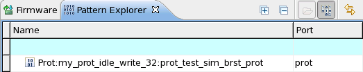

Protocol pattern specifics of the Pattern Explorer
Patterns generated by protocol transactions during the execution of your test flow will be shown in the Pattern Explorer just like any other pattern.
Note If you switch off memory logging with the TMUD firmware
command, the protocol patterns for the ports specified with TMUD will be
deleted. See TMUD (Tester Memory Utilization set Default values).
However, you will notice five differences
- No protocol specific pattern will be displayed when loading your vector setup.
- As soon you executed a protocol test, the pattern explorer is updated showing the protocol specific patterns.
- The Type of the generated pattern will be shown as Protocol.
- You cannot create a pattern of type Protocol following the Creating a new pattern procedure.
- The pattern name displayed in the pattern explorer has the following syntax: Prot:<Protocol Name>:<Test Suite>_<MP Burst>_<Port Name>
Example

Functional changes
- Introduced in SmarTest 7.1.0